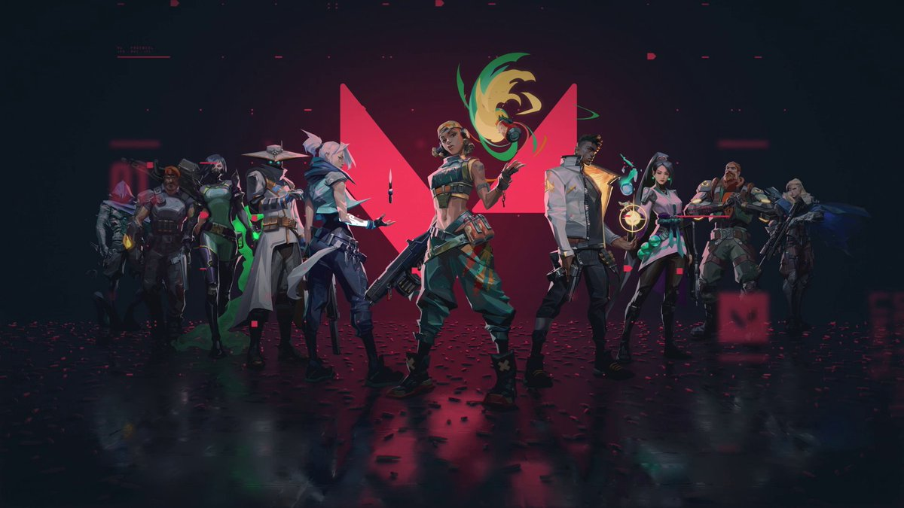

Valorant
05/10/22
valorant patch notes 4.09
A quick note about Sentinels: When we think about the Sentinel role, we think about its overall ability to keep map control and defend space. We believe that Sentinels and Sentinel players should have many options and methods to control and defend, whether it’s through the use of Sage’s reactive slow abilities, Cypher’s flank-watching gadgets, or defensively-oriented combat and guns like Chamber. Like all our Agents, it’s important to carve out sharp strengths and weaknesses for Chamber in the roster. If you take him for his weapon arsenal and disengage, you should feel as if you're giving up a strength—like traps or stall—that his peers excel at. As usual, all eyes are now on Chamber changes, and we’ll adjust if we see him suffer disproportionately on defense relative to attack. —Jay Watford, Lead Agent Designer, and Dan Hardison, Game Designer.